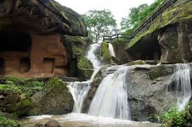
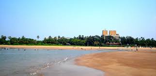
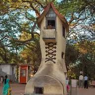
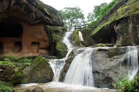
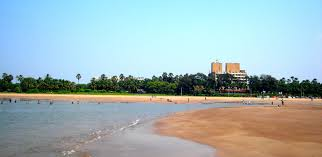
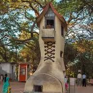
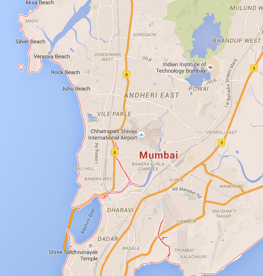

EXPLORE BEYOND BORDERS
HOME

 






Mumbai was originally an archipelago of seven islands that, after a several transfers of power, landed with the British as part of the dowry of Catherine of Braganza when she married Charles II of England. By 1845, the seven islands were merged as part of multiple land reclamation projects. The island city that we know today, one that extends up to Mahim/Sion, is a result of these reclamations. Over the centuries, Mumbai became an important port for the British thanks to its natural harbor. But Mumbai’s fortunes really rose during the American Civil War, which cut off cotton supplies from America to Great Britain. Traders made as much as 80 million pounds during this period giving rise to a new elite, Bombay’s very own merchant princes! Remnants of this glorious past — from dilapidated palatial bungalows to abandoned cotton factories — remain scattered in and around south Mumbai to this day. Much has changed since then. But the city continues to retain its cosmopolitan spirit and displays exceptional resilience in the face of difficult times. Few cities draw you to them, accept you as their own like Mumbai does. Mumbai’s energy is contagious. And indeed the city seems to have something for everyone — be it the people who travel to it for work or for pleasure.Company was created by a 19 year old entrepreneur named tom lyle williams in 1915. williams .The colonial buildings in south Mumbai are a sight for anyone visiting the city. Walk around the streets between Churchgate and Colaba to best experience the beauty of these buildings. Chattrapati Shivaji Terminus (Victoria Terminus), Flora Fountain, Gateway of India, Municipal Corporation and Police Headquarters, High Court, Asiatic Society and the Taj Mahal Hotel among many others make the south Mumbai district one of the quaintest areas of the city.
Marine Drive, a three km-long promenade is very popular among walkers. Also known as the Queen’s Necklace, when lit up at night, the lights along the stretch of the promenade resemble a string of pearls culminating at Chowpatty. Just off Marine Drive, is Mani Bhavan that served as Mahatma Gandhi’s residence in Mumbai during the freedom struggle and is one of the most significant memorials associated to him.The first floor of the building screens films on Gandhi and plays recordings of his speeches.Another great attraction is Haji Ali is located on a small islet in the Arabian sea.Built in 1431 the dargah sees about hundreds of thousands of visitors across all religions every week.